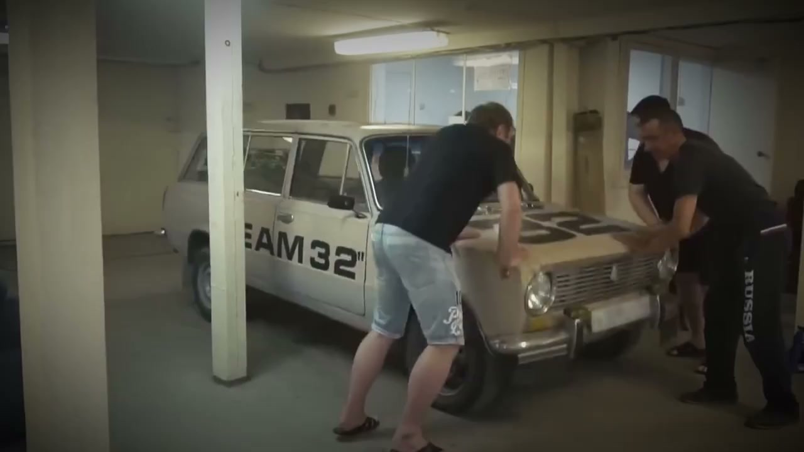
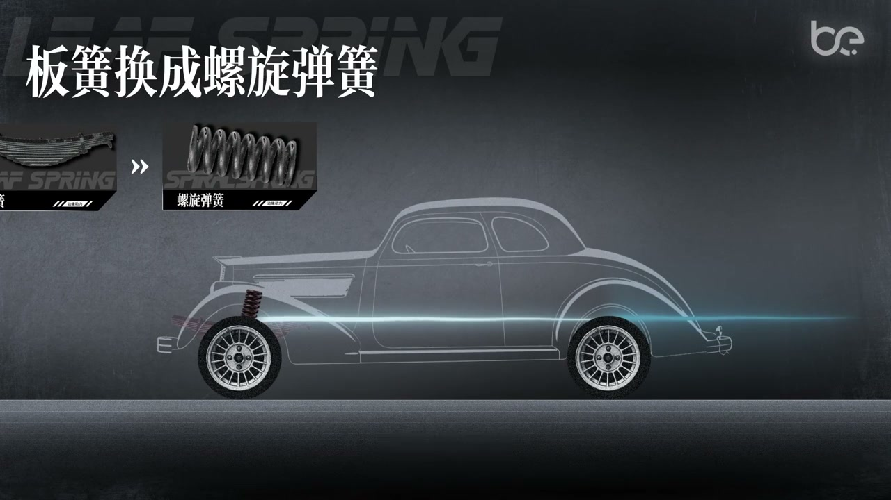
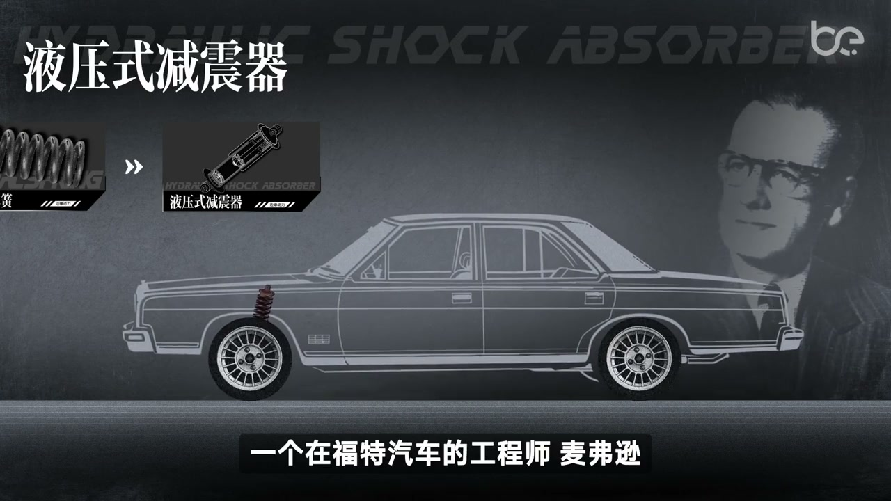
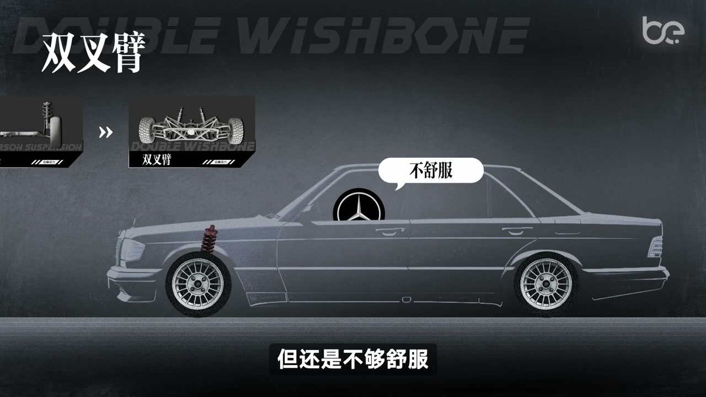
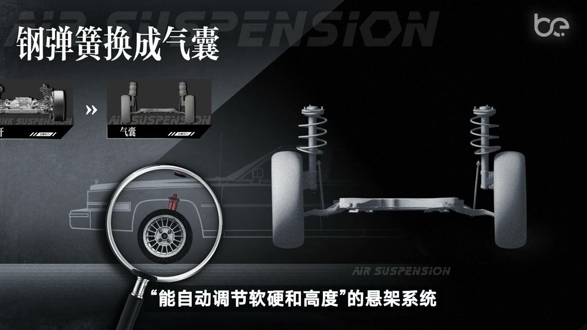
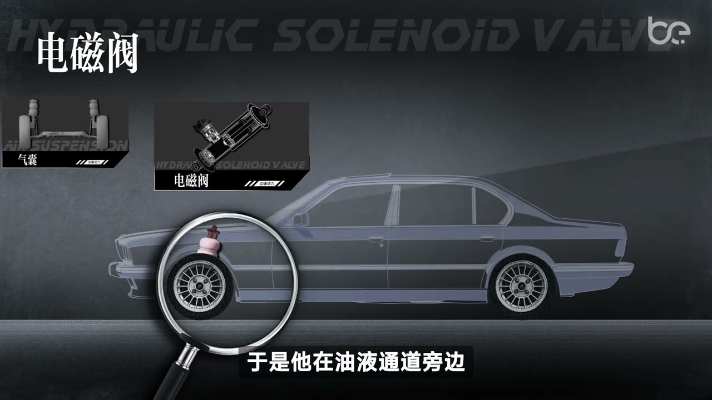
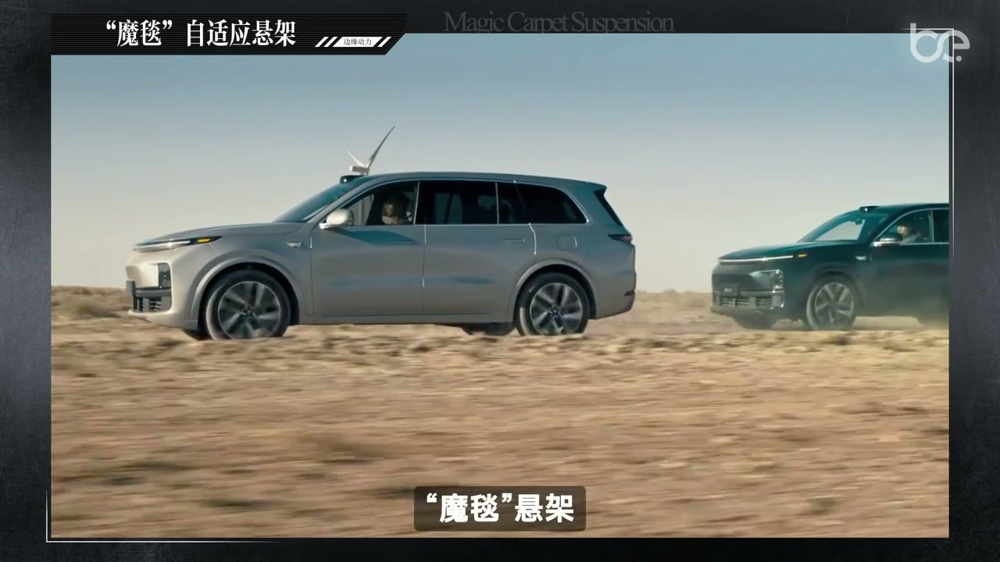
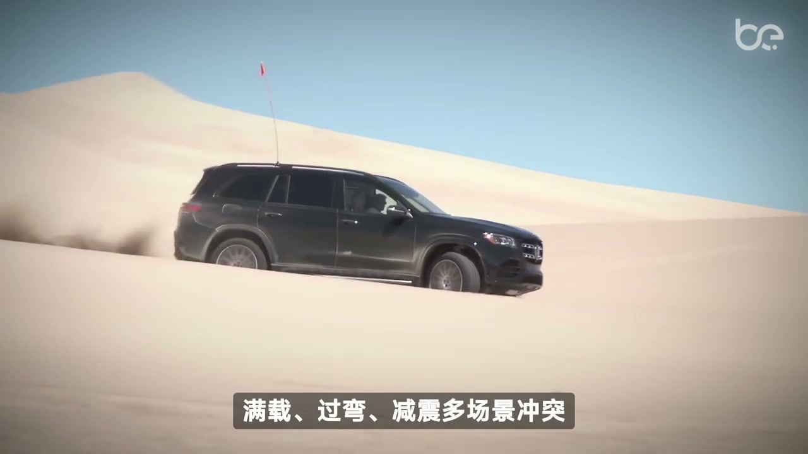

01
中文
如果你的汽车没有悬架会发生什么？
EN
What happens if your car has no suspension?
表达提示suspension（悬架）

Scene English · 汽车 · 悬架
Why Suspension Is the Most Underrated Tech
🎧 语音讲解
Life Without Suspension
情境没有悬架，踩油门车身仰起、过弯侧倾、过减速带直接颠到骨折，悬架是第一道防线。
如果你的汽车没有悬架会发生什么？
What happens if your car has no suspension?
表达提示suspension（悬架）
踩油门会这样，过弯会这样，过减速带会这样。
Accelerate: it rears. Corner: it leans. Speed bump: it crashes.
表达提示rears（仰起）
你没有看错，直接就颠骨折了。
No joke—it shakes you to the bone.
表达提示shakes to the bone（颠到骨头）
suspension（悬架
rears（仰起

From Leaf Springs to Coil Springs
情境最早的汽车只有硬连接，后来人们把马车的板簧装上，再换成螺旋弹簧，舒适性逐步提升。
这是最初的汽车，过颠簸路段时是这样的。
The earliest cars bounced wildly over bumps.
表达提示bounced（颠簸）
把马车上的板簧加上，是不是好点？是好了点，但不够好。
Add carriage leaf springs—better, but not enough.
表达提示leaf springs（板簧）
把板簧换成螺旋弹簧，车子会不会更舒服？答案是会。
Swap in coil springs and it gets much comfier.
表达提示coil springs（螺旋弹簧）
bounced（颠簸
leaf springs（板簧

Enter the Shock Absorber
情境螺旋弹簧会让车弹起来，于是劳斯莱斯兄弟用充满油的缸体加活塞杆造出减震器，油液流动形成阻力吸收震动。
开过颠簸之后，车又会弹起来一段。
After a bump, the car keeps bouncing.
表达提示bouncing（弹跳）
劳斯莱斯兄弟用一个充满油的缸体加活塞杆造了一个减震器。
The Rolls-Royce brothers built a shock absorber: an oil-filled cylinder with a piston.
表达提示shock absorber（减震器）
活塞在油液中移动，油通过小口流动形成阻力，从而减少震动。
The piston pushes oil through small holes, creating resistance that damps motion.
表达提示resistance（阻力）
bouncing（弹跳
shock absorber（减震器

MacPherson and Double Wishbone
情境麦弗逊把减震弹簧和下叉臂集成抵消侧倾；路特斯的查普曼觉得不够，再加一根上叉臂做成双叉臂，精准控制轮胎姿态。
转弯时侧倾严重，一边轮胎抓地力好，一边弱，车速稍快很容易甩出弯道。
Cornering leans hard, one tire grips, the other doesn't—spin-out risk rises.
表达提示spin-out（甩出弯道）
福特工程师麦弗逊把减震器弹簧和下叉臂集成在一起，悬架就能抵消侧倾的力。
Ford's MacPherson merged spring and strut with a lower arm to counter body roll.
表达提示body roll（侧倾）
路特斯的查普曼觉得不够，还要再多一根上叉臂。
Lotus's Chapman wanted more—add an upper wishbone.
表达提示upper wishbone（上叉臂）
双叉臂能精准控制轮胎与地面接触的姿态，高速过弯更咬地。
Double wishbones control tire attitude precisely, biting harder in fast corners.
表达提示bite（咬地）
spin-out（甩出弯道
body roll（侧倾

Five-Link and Air Suspension
情境奔驰用五连杆分担力提升舒适；凯迪拉克把钢弹簧换成气囊，靠打气放气控制软硬和高度，实现升降和软硬调节。
两个连杆不够，需要多个控制臂来分担力，奔驰一次性拉满发明了五连杆悬架。
Two arms aren't enough—Mercedes invented the five-link to spread the load.
表达提示five-link（五连杆）
传统弹簧太死，没法面对复杂的载重和多变的路况。
Fixed springs can't handle varying load and rough roads.
表达提示varying load（多变载重）
凯迪拉克把钢弹簧换成了气囊，靠打气和放气来控制软硬和高度。
Cadillac swapped steel for air bags, adjusting firmness and height by air.
表达提示air bags（气囊）
带空悬的车，上高速自动降低重心，下烂路自动升高底盘。
Air-sprung cars lower on the highway and lift on rough ground.
表达提示lower the center（降低重心）
five-link（五连杆
varying load（多变载重

CDC and Magic-Carpet Suspension
情境宝马工程师给减震器加电磁阀控制油口大小调阻尼；新能源车用激光雷达摄像头提前看到坑，ECU提前调软调硬，即魔毯悬架。
一位宝马的工程师觉得不够：减震可以调节软硬，但阻尼不可以自由调节。
A BMW engineer found damping couldn't vary—only spring stiffness.
表达提示damping（阻尼）
它在油液通道旁边多加了一个电磁阀，控制油口大小，从而控制阻尼的软硬。
He added a solenoid valve to size the oil port and tune the damping.
表达提示solenoid valve（电磁阀）
新能源车用激光雷达、摄像头、惯性传感器提前看到坑洼。
EVs use lidar, cameras, and IMUs to see potholes ahead.
表达提示lidar（激光雷达）
到达之前，ECU就把减震器调软或调硬，这就是大家说的魔毯悬架。
Before arrival, the ECU pre-tunes the damper—the magic-carpet ride.
表达提示magic-carpet（魔毯）
damping（阻尼
solenoid valve（电磁阀

Suspension Tells the Car's Evolution
情境悬架是所有汽车技术进化中最内在的演化，记录了从马车到汽车再到新能源汽车的每一次跃迁。
悬架是所有汽车技术进化当中最内在的演化。
Suspension is the most intrinsic evolution in car tech.
表达提示intrinsic（内在的）
它记录了汽车从马车到汽车，再到新能源汽车的每一次跃迁。
It records every leap from carriage to car to EV.
表达提示leap（跃迁）
每一次震动被悄悄收住，都是人类试图掌控混沌的微小胜利。
Every absorbed shock is a small human victory over chaos.
表达提示absorbed shock（被收住的震动）
intrinsic（内在的
leap（跃迁

How to Choose Your Chassis
情境底盘怎么选还得看大家要什么样的体验，常见的用车类型、悬架配置、适合建议一目了然。
说了这么多，底盘到底要怎么选呢？
After all this, how do you pick a chassis?
表达提示chassis（底盘）
还得看大家要什么样的体验。
It comes down to the experience you want.
表达提示experience（体验）
下面这张表格把常见的用车类型、悬架配置、适合建议都列出来了。
The table lists car types, suspension setups, and recommendations.
表达提示setup（配置）
chassis（底盘
experience（体验
说没有悬架
说悬架演变
说麦弗逊双叉臂
说五连杆空悬
说CDC魔毯
说悬架即历史
悬架七分靠调教。
太软反而晕车。
弹簧会弹跳。
电车重量逼出空悬。
终极是试驾。